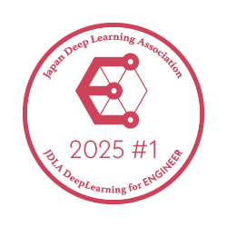

医療・研究データ解析
- 探索的データ解析と記述統計
- 群間比較、回帰分析、可視化
- 欠損データ処理とMICE型多重代入
- 医学的・統計的な結果解釈
Medical Data Science Portfolio
Freelance Medical Data Scientist
Pythonによる医療・公衆衛生データの統計解析、ベイズモデリング、機械学習、予測モデル構築、再現可能な解析コードおよび技術文書の作成に取り組んでいます。
現在、新規の業務相談・ご依頼はランサーズ経由のみ受け付けています。
Services
医療・生命科学分野のデータを対象として、解析設計からPython実装、検証、可視化、レポート作成まで対応します。
Featured Projects
解析手法だけでなく、再現性、コード品質、文書化まで含めてGitHub上で確認できる形に整理しています。
Rare-Event Modeling
慢性腎疾患(CKD)患者の透析移行リスクをMCMCベイズロジスティック回帰で予測しました。
prior specification · MCMC · stratified cross-validation · ROC-AUC · calibration · decision curve analysis
Bayesian Oncology
甲状腺がん患者の再発リスクをMCMC階層ベイズロジスティック回帰で予測しました。
PyMC · hierarchical modeling · MCMC diagnostics · LOO comparison · posterior predictive checks
Machine Learning
血液検査データから肝疾患を予測するモデルの構築、PCAやクラスタリングで潜在的な病態パターンの抽出を試みました。
PyCaret · Extra Trees · Optuna · PCA · K-Means clustering · SHAP
Complex Survey Analysis
NHANES公開データを統合し、複雑標本デザインと欠損データを考慮して、肝線維化スコアと血液生化学マーカーの関連を解析しました。
MICE-style multiple imputation · Elastic Net · survey-weighted Gaussian GLM · Rubin's rules · quantile regression
Reproducibility
分析結果だけでなく、第三者が構成と処理を追跡しやすい成果物を重視しています。
About
生物工学の博士号を持ち、生物工学および臨床検査分野の研究経験を背景として、医療・公衆衛生データの統計解析に取り組んでいます。
Pythonによる解析実装、ベイズ統計、機械学習、再現可能な研究成果物の作成を専門領域としています。

E Qualification, 2025 #1 — Passed
日本ディープラーニング協会 E資格（2025年第1回）合格
Selected Publication
「新規化学発光免疫測定装置を用いた胃がんリスク層別化検査と健常者血清ペプシノゲン値に関する検討」
『医学と薬学』77巻4号, 573–586, 2020. Japanese-language peer-reviewed article related to in vitro diagnostic testing.
"Measurement of microRNA with isothermal DNA amplification on fully automated immunoassay analyzers"
Analytical and Bioanalytical Chemistry (2019), 411, 3789–3800. Peer-reviewed article on in vitro diagnostic measurement of microRNA using isothermal DNA amplification.
Earlier Medical AI Project
皮膚画像と問診情報を組み合わせて疾患候補カテゴリーを提示する、教育・研究目的のディープラーニング試作アプリです。
DenseNet201、AutoEncoder、BERT、Streamlit、FastAPI、Docker、Google Cloud Runを使用しました。
Technical Stack
Work Inquiries
現在、新規の医療統計、Pythonコード作成、データ解析業務のご相談・ご依頼は、ランサーズ経由のみ受け付けています。
New project inquiries are currently accepted only through Lancers.